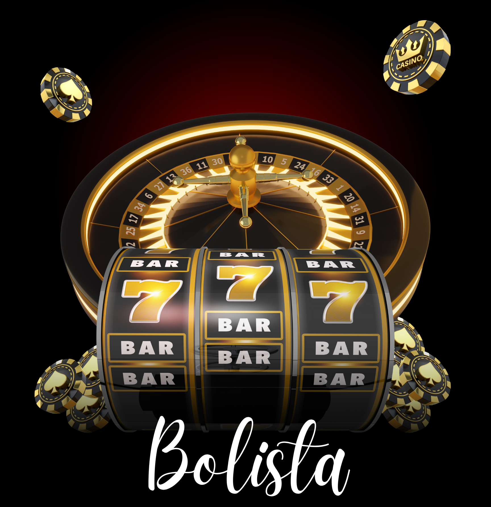

<ion-app>
  <ion-split-pane contentId="main-content">
    <ion-menu contentId="main-content" type="overlay">
      <ion-content>
      
        <ion-list id="inbox-list">
          
        </ion-list>
     
        <ion-list id="labels-list">
          <ion-list-header>Archivos</ion-list-header>
          

          <ion-menu-toggle auto-hide="false">

            <ion-item lines="none" routerLink="/Lista" detail="false" routerLinkActive="selected">
              <ion-icon slot="start" ios="reader-outline" md="reader-sharp"></ion-icon>
              <ion-label>Lista</ion-label>
            </ion-item>

            <ion-item routerLink="/Pase" detail="false" routerLinkActive="selected" lines="none">
              <ion-icon slot="start" ios="document-outline" md="document-sharp"></ion-icon>
              <ion-label>Pase</ion-label>
            </ion-item>
            
            <ion-item routerLink="/Pase +" detail="false" routerLinkActive="selected" lines="none">
              <ion-icon slot="start" ios="documents-outline" md="documents-sharp"></ion-icon>
              <ion-label>Pase +</ion-label>
            </ion-item>
            
            <ion-item routerLink="/Ganadores" detail="false" routerLinkActive="selected" lines="none">
              <ion-icon slot="start" ios="calendar-outline" md="calendar-sharp"></ion-icon>
              <ion-label>Ganadores</ion-label>
            </ion-item>
            
            <ion-item routerLink="/Premios" detail="false" routerLinkActive="selected" lines="none">
              <ion-icon slot="start" ios="trophy-outline" md="trophy-sharp"></ion-icon>
              <ion-label>Premios</ion-label>
            </ion-item>

           

          </ion-menu-toggle>
        </ion-list>


        <ion-list id="labels-list">
          
          <ion-list-header>Ayuda</ion-list-header>
          <ion-menu-toggle auto-hide="false">
          <ion-item lines="none" routerLink="/Configuración" detail="false" routerLinkActive="selected">
            <ion-icon aria-hidden="true" slot="start" ios="settings-outline" md="settings-sharp"></ion-icon>
            <ion-label>Configuración</ion-label>
          </ion-item>

          <ion-item routerLink="/Acerca de" detail="false" routerLinkActive="selected" lines="none">
            <ion-icon slot="start" ios="help-circle-outline" md="help-circle-sharp"></ion-icon>
            <ion-label>Acerca de ...</ion-label>
          </ion-item>

          <ion-item routerLink="/Salir" detail="false" routerLinkActive="selected" lines="none" (click)="close()">
            <ion-icon  slot="start" ios="exit-outline" md="exit-sharp"></ion-icon>
            <ion-label>Salir</ion-label>
          </ion-item>
        </ion-menu-toggle>
        </ion-list>
 
      </ion-content>
    </ion-menu>
    <ion-router-outlet id="main-content"></ion-router-outlet>
  </ion-split-pane>
</ion-app>
